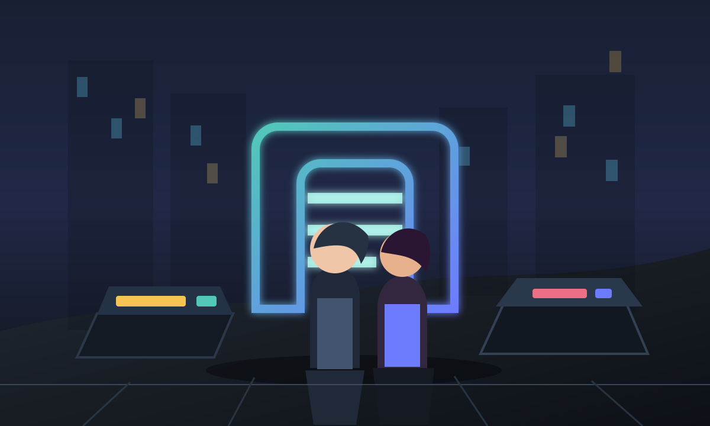

Story Engine
Session state, choices, memory summaries, relationship changes, save/load, and visual novel playback.
Portfolio Demo Platform

The archive gate wakes as your token touches the scanner. Three market signs flicker in sequence, and Mira warns that the memory shard is already rewriting nearby records.
Architecture
Session state, choices, memory summaries, relationship changes, save/load, and visual novel playback.
World-scoped lore ingestion, document metadata, retrieval modes, rerank flags, and citations per turn.
Tool catalog, assisted decisions, state deltas, world writeback suggestions, and review queue controls.
Scene prompt construction, LoRA/world visual style hooks, background jobs, and mock-safe demo outputs.
Demo Evidence
pytest -m smoke covers story turns, RAG batch upload, World Studio, and job artifacts in mock mode.
The workbench builds as a production bundle and can be shown beside this static portfolio page.
GitHub Pages or Vercel can host this demo without model downloads, GPU scheduling, Redis, or Celery workers.
Recording Flow
make test-smoke and cd frontend/react && npm run build as proof that the demo gate passes.